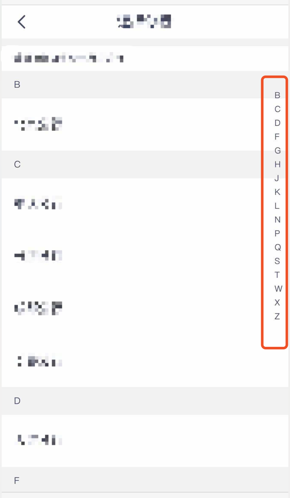
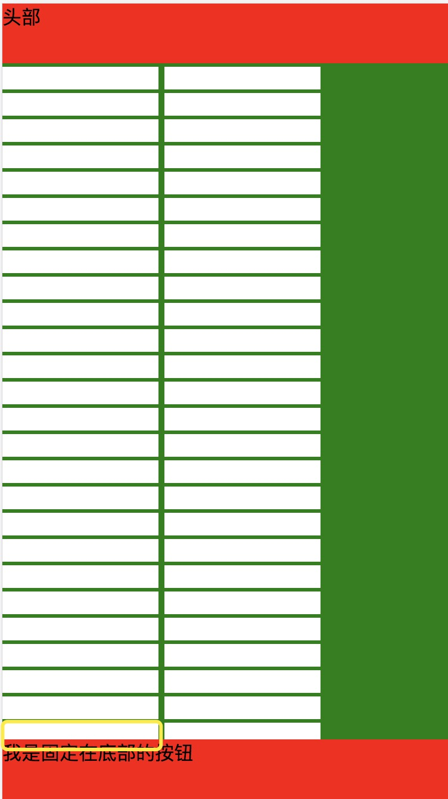
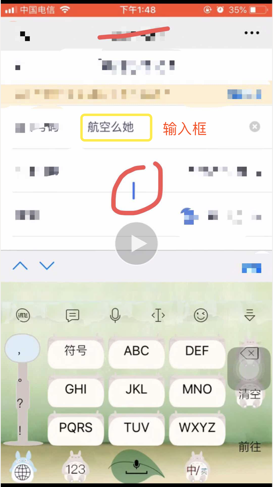

<!DOCTYPE html>
<html>
<head><meta name="generator" content="Hexo 3.8.0">
  <meta charset="utf-8">
  
  <title>移动端常见兼容性问题(二) | guowj</title>
  <meta name="viewport" content="width=device-width, initial-scale=1, maximum-scale=1">
  
  <meta name="keywords" content="移动端兼容性">
  
  
  
  
  <meta name="description" content="&amp;nbsp;&amp;nbsp;&amp;nbsp;&amp;nbsp;之前的文章写了一些移动端常见的兼容性问题，本文将继续总结一些兼容问题的解决套路。">
<meta name="keywords" content="移动端,兼容性">
<meta property="og:type" content="article">
<meta property="og:title" content="移动端常见兼容性问题(二)">
<meta property="og:url" content="https://gwjacqueline.github.io/移动端常见兼容性问题(二)/index.html">
<meta property="og:site_name" content="guowj">
<meta property="og:description" content="&amp;nbsp;&amp;nbsp;&amp;nbsp;&amp;nbsp;之前的文章写了一些移动端常见的兼容性问题，本文将继续总结一些兼容问题的解决套路。">
<meta property="og:locale" content="zh-CN">
<meta property="og:image" content="https://gwjacqueline.github.io/images/cityFixed.png">
<meta property="og:image" content="https://gwjacqueline.github.io/images/ios%20Disabled.png">
<meta property="og:image" content="https://gwjacqueline.github.io/images/iosfixBtn.jpg">
<meta property="og:image" content="https://gwjacqueline.github.io/images/iosgb.png">
<meta property="og:updated_time" content="2019-05-08T11:42:14.000Z">
<meta name="twitter:card" content="summary">
<meta name="twitter:title" content="移动端常见兼容性问题(二)">
<meta name="twitter:description" content="&amp;nbsp;&amp;nbsp;&amp;nbsp;&amp;nbsp;之前的文章写了一些移动端常见的兼容性问题，本文将继续总结一些兼容问题的解决套路。">
<meta name="twitter:image" content="https://gwjacqueline.github.io/images/cityFixed.png">
  
    <link rel="alternate" href="/atom.xml" title="guowj" type="application/atom+xml">
  

  

  <link rel="icon" href="/css/images/mylogo.png">
  <link rel="apple-touch-icon" href="/css/images/mylogo.png">
  
    <link href="//fonts.googleapis.com/css?family=Source+Code+Pro" rel="stylesheet" type="text/css">
  
  <link href="https://fonts.googleapis.com/css?family=Open+Sans|Montserrat:700" rel="stylesheet" type="text/css">
  <link href="https://fonts.googleapis.com/css?family=Roboto:400,300,300italic,400italic" rel="stylesheet" type="text/css">
  <link href="//netdna.bootstrapcdn.com/font-awesome/4.0.3/css/font-awesome.css" rel="stylesheet">
  <style type="text/css">
    @font-face{font-family:futura-pt; src:url("../css/fonts/FuturaPTBold.otf") format("woff");font-weight:500;font-style:normal;}
    @font-face{font-family:futura-pt-light; src:url("../css/fonts/FuturaPTBook.otf") format("woff");font-weight:lighter;font-style:normal;}
    @font-face{font-family:futura-pt-italic; src:url("../css/fonts/FuturaPTBookOblique.otf") format("woff");font-weight:400;font-style:italic;}
}

  </style>
  <link rel="stylesheet" href="/css/style.css">

  <script src="/js/jquery-3.1.1.min.js"></script>
  <script src="/js/bootstrap.js"></script>

  <!-- Bootstrap core CSS -->
  <link rel="stylesheet" href="/css/bootstrap.css">

  
    <link rel="stylesheet" href="/css/dialog.css">
  

  

  
    <link rel="stylesheet" href="/css/header-post.css">
  

  
  
  
    <link rel="stylesheet" href="/css/vdonate.css">
  

</head>
</html>


  <body data-spy="scroll" data-target="#toc" data-offset="50">


  
  <div id="container">
    <div id="wrap">
      
        <header>

    <div id="allheader" class="navbar navbar-default navbar-static-top" role="navigation">
        <div class="navbar-inner">
          
          <div class="container"> 
            <button type="button" class="navbar-toggle" data-toggle="collapse" data-target=".navbar-collapse">
              <span class="sr-only">Toggle navigation</span>
              <span class="icon-bar"></span>
              <span class="icon-bar"></span>
              <span class="icon-bar"></span>
            </button>

            
              <a class="brand" style="
                 margin-top: 0px;" href="#" data-toggle="modal" data-target="#myModal">
                  
              </a>
            
            
            <div class="navbar-collapse collapse">
              <ul class="hnav navbar-nav">
                
                  <li> <a class="main-nav-link" href="/">首页</a> </li>
                
                  <li> <a class="main-nav-link" href="/archives">归档</a> </li>
                
                  <li> <a class="main-nav-link" href="/categories">分类</a> </li>
                
                  <li> <a class="main-nav-link" href="/tags">标签</a> </li>
                
                  <li> <a class="main-nav-link" href="/about">关于</a> </li>
                
                  <li><div id="search-form-wrap">

    <form class="search-form">
        <input type="text" class="ins-search-input search-form-input" placeholder>
        <button type="submit" class="search-form-submit"></button>
    </form>
    <div class="ins-search">
    <div class="ins-search-mask"></div>
    <div class="ins-search-container">
        <div class="ins-input-wrapper">
            <input type="text" class="ins-search-input" placeholder="请输入关键词...">
            <span class="ins-close ins-selectable"><i class="fa fa-times-circle"></i></span>
        </div>
        <div class="ins-section-wrapper">
            <div class="ins-section-container"></div>
        </div>
    </div>
</div>
<script>
(function (window) {
    var INSIGHT_CONFIG = {
        TRANSLATION: {
            POSTS: '文章',
            PAGES: '页面',
            CATEGORIES: '分类',
            TAGS: '标签',
            UNTITLED: '(无标题)',
        },
        ROOT_URL: '/',
        CONTENT_URL: '/content.json',
    };
    window.INSIGHT_CONFIG = INSIGHT_CONFIG;
})(window);
</script>
<script src="/js/insight.js"></script>

</div></li>
            </ul></div>
          </div>
                
      </div>
    </div>

</header>


      
            
      <div id="content" class="outer">
        
          <section id="main" style="float:none;"><article id="post-移动端常见兼容性问题(二)" style="width: 75%; float:left;" class="article article-type-post" itemscope itemprop="blogPost">
  <div id="articleInner" class="article-inner">
    
    
      <header class="article-header">
        
  
    <h1 class="thumb" itemprop="name">
      移动端常见兼容性问题(二)
    </h1>
  

      </header>
    
    <div class="article-meta">
      
	<a href="/移动端常见兼容性问题(二)/" class="article-date">
	  <time datetime="2019-04-27T07:46:46.000Z" itemprop="datePublished">2019-04-27</time>
	</a>

      
    <a class="article-category-link" href="/categories/css/">css</a>

      
	<a class="article-views">
	<span id="busuanzi_container_page_pv">
		阅读量<span id="busuanzi_value_page_pv"></span>
	</span>
	</a>

      

    </div>
    <div class="article-entry" itemprop="articleBody">
      
        <blockquote>
<p>&nbsp;&nbsp;&nbsp;&nbsp;之前的<a href="https://gwjacqueline.github.io/移动端常见兼容性问题/">文章</a>写了一些移动端常见的兼容性问题，本文将继续总结一些兼容问题的解决套路。</p>
</blockquote>
<a id="more"></a>
<h3 id="fixed-定位问题"><a href="#fixed-定位问题" class="headerlink" title="fixed 定位问题"></a>fixed 定位问题</h3><div align="center"><br>  <br></div>

<h4 id="主要代码："><a href="#主要代码：" class="headerlink" title="主要代码："></a>主要代码：</h4><figure class="highlight plain"><table><tr><td class="gutter"><pre><span class="line">1</span><br><span class="line">2</span><br><span class="line">3</span><br><span class="line">4</span><br><span class="line">5</span><br><span class="line">6</span><br><span class="line">7</span><br><span class="line">8</span><br><span class="line">9</span><br><span class="line">10</span><br><span class="line">11</span><br><span class="line">12</span><br><span class="line">13</span><br><span class="line">14</span><br><span class="line">15</span><br><span class="line">16</span><br><span class="line">17</span><br><span class="line">18</span><br><span class="line">19</span><br><span class="line">20</span><br></pre></td><td class="code"><pre><span class="line">&lt;style&gt;</span><br><span class="line">//红框部分</span><br><span class="line">.city&#123;</span><br><span class="line">  position:fixed;</span><br><span class="line">  top:50px;</span><br><span class="line">  height:300px;</span><br><span class="line">  overflow:auto;</span><br><span class="line">  -webkit-overflow-scrolling:touch;</span><br><span class="line">  z-index:100;</span><br><span class="line">&#125;</span><br><span class="line">&lt;/style&gt;</span><br><span class="line">&lt;body&gt;</span><br><span class="line">  //绝对定位</span><br><span class="line">  &lt;header&gt;&lt;/header&gt;</span><br><span class="line">  //下半部分绝对定位</span><br><span class="line">  &lt;div&gt;</span><br><span class="line">    //红框部分</span><br><span class="line">    &lt;div class=&quot;city&quot;&gt;&lt;/div&gt;</span><br><span class="line">  &lt;/div&gt;</span><br><span class="line">&lt;/body&gt;</span><br></pre></td></tr></table></figure>
<h4 id="bug-描述："><a href="#bug-描述：" class="headerlink" title="bug 描述："></a>bug 描述：</h4><p>1.在安卓机上，红框部分，超过的文字，无法通过滑动查看 2.在 ios 上，红框部分会随下半部分一起滚动。</p>
<h4 id="bug-解决："><a href="#bug-解决：" class="headerlink" title="bug 解决："></a>bug 解决：</h4><figure class="highlight plain"><table><tr><td class="gutter"><pre><span class="line">1</span><br><span class="line">2</span><br><span class="line">3</span><br><span class="line">4</span><br><span class="line">5</span><br><span class="line">6</span><br><span class="line">7</span><br><span class="line">8</span><br><span class="line">9</span><br><span class="line">10</span><br><span class="line">11</span><br><span class="line">12</span><br><span class="line">13</span><br><span class="line">14</span><br><span class="line">15</span><br><span class="line">16</span><br><span class="line">17</span><br><span class="line">18</span><br><span class="line">19</span><br><span class="line">20</span><br><span class="line">21</span><br></pre></td><td class="code"><pre><span class="line">&lt;style&gt;</span><br><span class="line">//红框部分</span><br><span class="line">.city&#123;</span><br><span class="line">  position:fixed;</span><br><span class="line">  top:50px;</span><br><span class="line">  //把高度去掉，改为Bottom</span><br><span class="line">  bottom:50px;</span><br><span class="line">  overflow:auto;</span><br><span class="line">  -webkit-overflow-scrolling:touch;</span><br><span class="line">  z-index:100;</span><br><span class="line">&#125;</span><br><span class="line">&lt;/style&gt;</span><br><span class="line">&lt;body&gt;</span><br><span class="line">  //绝对定位</span><br><span class="line">  &lt;header&gt;&lt;/header&gt;</span><br><span class="line">  //下半部分绝对定位</span><br><span class="line">  &lt;div&gt;</span><br><span class="line">  &lt;/div&gt;</span><br><span class="line">  //将红框部分移出</span><br><span class="line">  &lt;div class=&quot;city&quot;&gt;&lt;/div&gt;</span><br><span class="line">&lt;/body&gt;</span><br></pre></td></tr></table></figure>
<h3 id="ios-后台倒计时停止"><a href="#ios-后台倒计时停止" class="headerlink" title="ios 后台倒计时停止"></a>ios 后台倒计时停止</h3><h4 id="主要代码：-1"><a href="#主要代码：-1" class="headerlink" title="主要代码："></a>主要代码：</h4><figure class="highlight plain"><table><tr><td class="gutter"><pre><span class="line">1</span><br><span class="line">2</span><br><span class="line">3</span><br><span class="line">4</span><br><span class="line">5</span><br><span class="line">6</span><br><span class="line">7</span><br><span class="line">8</span><br></pre></td><td class="code"><pre><span class="line">var count = 30;</span><br><span class="line">var inter = setInterval(clock, 1000);</span><br><span class="line">function clock() &#123;</span><br><span class="line">  count--</span><br><span class="line">  if (count &lt; 1) &#123;</span><br><span class="line">    clearInterval(inter);</span><br><span class="line">  &#125;</span><br><span class="line">&#125;</span><br></pre></td></tr></table></figure>
<h4 id="bug-描述：-1"><a href="#bug-描述：-1" class="headerlink" title="bug 描述："></a>bug 描述：</h4><p>ios 切换到后台程序后，倒计时就停止了</p>
<h4 id="bug-解决：-1"><a href="#bug-解决：-1" class="headerlink" title="bug 解决："></a>bug 解决：</h4><figure class="highlight plain"><table><tr><td class="gutter"><pre><span class="line">1</span><br><span class="line">2</span><br><span class="line">3</span><br><span class="line">4</span><br><span class="line">5</span><br><span class="line">6</span><br><span class="line">7</span><br><span class="line">8</span><br><span class="line">9</span><br><span class="line">10</span><br><span class="line">11</span><br><span class="line">12</span><br><span class="line">13</span><br></pre></td><td class="code"><pre><span class="line">var old = new Date().getTime();</span><br><span class="line">var count = 30;</span><br><span class="line">var inter = setInterval(clock, 1000);</span><br><span class="line">function clock() &#123;</span><br><span class="line">  //计时器实时计算当前时间</span><br><span class="line">  var now = new Date().getTime();</span><br><span class="line">  var count = 30 - Math.floor((parseInt(now) - parseInt(old)) / 1000);</span><br><span class="line"></span><br><span class="line">  $(&quot;.clock&quot;).html(count);</span><br><span class="line">  if (count &lt; 1) &#123;</span><br><span class="line">    clearInterval(inter);</span><br><span class="line">  &#125;</span><br><span class="line">&#125;</span><br></pre></td></tr></table></figure>
<p>采用实时计算时间差的方式解决，具体效果可看<a href="https://gwjacqueline.github.io/countDown/index.html">倒计时测试</a></p>
<h3 id="ios-input-disabled-灰色"><a href="#ios-input-disabled-灰色" class="headerlink" title="ios input disabled 灰色"></a>ios input disabled 灰色</h3><div align="center"><br>  <br></div>

<h4 id="bug-描述：ios-下输入框为-disabled-时，默认字体为灰色"><a href="#bug-描述：ios-下输入框为-disabled-时，默认字体为灰色" class="headerlink" title="bug 描述：ios 下输入框为 disabled 时，默认字体为灰色"></a>bug 描述：ios 下输入框为 disabled 时，默认字体为灰色</h4><h4 id="bug-解决：-2"><a href="#bug-解决：-2" class="headerlink" title="bug 解决："></a>bug 解决：</h4><figure class="highlight plain"><table><tr><td class="gutter"><pre><span class="line">1</span><br><span class="line">2</span><br><span class="line">3</span><br></pre></td><td class="code"><pre><span class="line">input:disabled,textarea:disabled&#123;</span><br><span class="line">  -webkit-opacity:1;</span><br><span class="line">&#125;</span><br></pre></td></tr></table></figure>
<h3 id="华为、小米键盘遮住输入框"><a href="#华为、小米键盘遮住输入框" class="headerlink" title="华为、小米键盘遮住输入框"></a>华为、小米键盘遮住输入框</h3><h4 id="主要代码：-2"><a href="#主要代码：-2" class="headerlink" title="主要代码："></a>主要代码：</h4><figure class="highlight plain"><table><tr><td class="gutter"><pre><span class="line">1</span><br><span class="line">2</span><br><span class="line">3</span><br><span class="line">4</span><br><span class="line">5</span><br><span class="line">6</span><br><span class="line">7</span><br><span class="line">8</span><br><span class="line">9</span><br><span class="line">10</span><br><span class="line">11</span><br><span class="line">12</span><br><span class="line">13</span><br><span class="line">14</span><br><span class="line">15</span><br><span class="line">16</span><br><span class="line">17</span><br><span class="line">18</span><br></pre></td><td class="code"><pre><span class="line">&lt;style&gt;</span><br><span class="line">body&#123;</span><br><span class="line">  height:100%;</span><br><span class="line">&#125;</span><br><span class="line">.main&#123;</span><br><span class="line">  top:0;</span><br><span class="line">  bottom:0;</span><br><span class="line">  left:0;</span><br><span class="line">  right:0;</span><br><span class="line">  background-image:cover;</span><br><span class="line">  overflow:auto;</span><br><span class="line">&#125;</span><br><span class="line">&lt;/style&gt;</span><br><span class="line">&lt;body&gt;</span><br><span class="line">  &lt;div class=&quot;main&quot;&gt;</span><br><span class="line">  //里面的所有输入框为自然布局</span><br><span class="line">  &lt;/div&gt;</span><br><span class="line">&lt;/body&gt;</span><br></pre></td></tr></table></figure>
<h4 id="bug-描述：点击页面较下面的输入框，键盘会遮挡输入框，且无法上拉页面。"><a href="#bug-描述：点击页面较下面的输入框，键盘会遮挡输入框，且无法上拉页面。" class="headerlink" title="bug 描述：点击页面较下面的输入框，键盘会遮挡输入框，且无法上拉页面。"></a>bug 描述：点击页面较下面的输入框，键盘会遮挡输入框，且无法上拉页面。</h4><h4 id="bug-解决：-3"><a href="#bug-解决：-3" class="headerlink" title="bug 解决："></a>bug 解决：</h4><p>方法 1：可以上拉页面看到输入框</p>
<figure class="highlight plain"><table><tr><td class="gutter"><pre><span class="line">1</span><br><span class="line">2</span><br><span class="line">3</span><br><span class="line">4</span><br><span class="line">5</span><br><span class="line">6</span><br><span class="line">7</span><br></pre></td><td class="code"><pre><span class="line">&lt;style&gt;</span><br><span class="line">.main&#123;</span><br><span class="line">  height:100%;</span><br><span class="line">  background-image:cover;</span><br><span class="line">  overflow:auto;</span><br><span class="line">&#125;</span><br><span class="line">&lt;/style&gt;</span><br></pre></td></tr></table></figure>
<p>方法 2：可以自动顶起输入框</p>
<figure class="highlight plain"><table><tr><td class="gutter"><pre><span class="line">1</span><br><span class="line">2</span><br><span class="line">3</span><br><span class="line">4</span><br><span class="line">5</span><br><span class="line">6</span><br><span class="line">7</span><br><span class="line">8</span><br><span class="line">9</span><br><span class="line">10</span><br><span class="line">11</span><br><span class="line">12</span><br><span class="line">13</span><br><span class="line">14</span><br><span class="line">15</span><br><span class="line">16</span><br><span class="line">17</span><br><span class="line">18</span><br></pre></td><td class="code"><pre><span class="line">(function()&#123;</span><br><span class="line">  var screenH=$(document).height();</span><br><span class="line">  $(&apos;input&apos;).focus(function()&#123;</span><br><span class="line">      var top = $(this).offset().top;</span><br><span class="line">      var h=$(this).height();</span><br><span class="line">      if(top+h&gt;screenH/2)&#123;</span><br><span class="line">        var scrollTop = $(&quot;滚动主体&quot;).scrollTop();</span><br><span class="line">        $(&quot;滚动主体&quot;).append(&quot;&lt;div class=&apos;addHeight&apos;&gt;&lt;/div&gt;&quot;);</span><br><span class="line">        $(&quot;.addHeight&quot;).css(&apos;padding-bottom&apos;,screenH/2+&apos;px&apos;);</span><br><span class="line">        $(&quot;滚动主体&quot;).scrollTop(screenH/2+screenTop-20);</span><br><span class="line">      &#125;</span><br><span class="line">  &#125;);</span><br><span class="line">  $(&apos;input&apos;).blur(function()&#123;</span><br><span class="line">      if($(&quot;.addHeight&quot;).length&gt;0)&#123;</span><br><span class="line">          $(&quot;.addHeight&quot;).remove();</span><br><span class="line">      &#125;</span><br><span class="line">  &#125;);</span><br><span class="line">&#125;)();</span><br></pre></td></tr></table></figure>
<h3 id="ios-键盘挡住输入框"><a href="#ios-键盘挡住输入框" class="headerlink" title="ios 键盘挡住输入框"></a>ios 键盘挡住输入框</h3><div align="center"><br>  <br></div>

<h4 id="主要代码：-3"><a href="#主要代码：-3" class="headerlink" title="主要代码："></a>主要代码：</h4><figure class="highlight plain"><table><tr><td class="gutter"><pre><span class="line">1</span><br><span class="line">2</span><br><span class="line">3</span><br><span class="line">4</span><br><span class="line">5</span><br><span class="line">6</span><br><span class="line">7</span><br><span class="line">8</span><br><span class="line">9</span><br><span class="line">10</span><br><span class="line">11</span><br><span class="line">12</span><br><span class="line">13</span><br><span class="line">14</span><br><span class="line">15</span><br><span class="line">16</span><br><span class="line">17</span><br><span class="line">18</span><br><span class="line">19</span><br><span class="line">20</span><br><span class="line">21</span><br><span class="line">22</span><br><span class="line">23</span><br><span class="line">24</span><br><span class="line">25</span><br><span class="line">26</span><br><span class="line">27</span><br><span class="line">28</span><br><span class="line">29</span><br><span class="line">30</span><br><span class="line">31</span><br><span class="line">32</span><br><span class="line">33</span><br><span class="line">34</span><br><span class="line">35</span><br><span class="line">36</span><br><span class="line">37</span><br></pre></td><td class="code"><pre><span class="line">&lt;style&gt;</span><br><span class="line">  header &#123;</span><br><span class="line">      height: 50px;</span><br><span class="line">      background-color: red;</span><br><span class="line">      top: 0;</span><br><span class="line">      bottom: 0;</span><br><span class="line">      left: 0;</span><br><span class="line">      right: 0;</span><br><span class="line">      position: absolute;</span><br><span class="line">  &#125;</span><br><span class="line">  .content &#123;</span><br><span class="line">      top: 50px;</span><br><span class="line">      left: 0;</span><br><span class="line">      right: 0;</span><br><span class="line">      bottom: 0;</span><br><span class="line">      padding-bottom: 50px;</span><br><span class="line">      overflow: auto;</span><br><span class="line">      position: absolute;</span><br><span class="line">      background-color: green;</span><br><span class="line">  &#125;</span><br><span class="line">  .bottom &#123;</span><br><span class="line">      position: fixed;</span><br><span class="line">      bottom: 0;</span><br><span class="line">      left: 0;</span><br><span class="line">      right: 0;</span><br><span class="line">      height: 50px;</span><br><span class="line">      background-color: red;</span><br><span class="line">  &#125;</span><br><span class="line">&lt;/style&gt;</span><br><span class="line"></span><br><span class="line">&lt;body&gt;</span><br><span class="line">  &lt;header&gt;头部&lt;/header&gt;</span><br><span class="line">  &lt;div class=&quot;content&quot;&gt;</span><br><span class="line">  &lt;input type=&quot;text&quot; /&gt;</span><br><span class="line">  &lt;/div&gt;</span><br><span class="line">  &lt;div class=&quot;bottom&quot;&gt;我是固定在底部的按钮&lt;/div&gt;</span><br><span class="line">&lt;/body&gt;</span><br></pre></td></tr></table></figure>
<h4 id="bug-描述：-2"><a href="#bug-描述：-2" class="headerlink" title="bug 描述："></a>bug 描述：</h4><p>点击图中圈出的黄色输入框，键盘会遮住输入框，无法上弹</p>
<h4 id="bug-解决：-4"><a href="#bug-解决：-4" class="headerlink" title="bug 解决："></a>bug 解决：</h4><figure class="highlight plain"><table><tr><td class="gutter"><pre><span class="line">1</span><br><span class="line">2</span><br><span class="line">3</span><br><span class="line">4</span><br><span class="line">5</span><br><span class="line">6</span><br><span class="line">7</span><br><span class="line">8</span><br><span class="line">9</span><br><span class="line">10</span><br><span class="line">11</span><br><span class="line">12</span><br></pre></td><td class="code"><pre><span class="line">&lt;style&gt;</span><br><span class="line">  .content &#123;</span><br><span class="line">      top: 50px;</span><br><span class="line">      left: 0;</span><br><span class="line">      right: 0;</span><br><span class="line">      bottom: 50px;</span><br><span class="line">      &lt;!-- padding-bottom: 50px; --&gt;</span><br><span class="line">      overflow: auto;</span><br><span class="line">      position: absolute;</span><br><span class="line">      background-color: green;</span><br><span class="line">  &#125;</span><br><span class="line">&lt;/style&gt;</span><br></pre></td></tr></table></figure>
<h3 id="部分-Ios-手机不支持-css-focus-valid"><a href="#部分-Ios-手机不支持-css-focus-valid" class="headerlink" title="部分 Ios 手机不支持 css:focus:valid"></a>部分 Ios 手机不支持 css:focus:valid</h3><h4 id="bug-描述：-3"><a href="#bug-描述：-3" class="headerlink" title="bug 描述："></a>bug 描述：</h4><p>当给输入框加属性 required 的时候，用:focus:valid 加样式，部分手机不支持。但是单独支持:focus/:valid。</p>
<h4 id="bug-解决：-5"><a href="#bug-解决：-5" class="headerlink" title="bug 解决："></a>bug 解决：</h4><p>用 js 判断，加样式。</p>
<h3 id="ios-光标上下飘"><a href="#ios-光标上下飘" class="headerlink" title="ios 光标上下飘"></a>ios 光标上下飘</h3><div align="center"><br>  <br></div>

<figure class="highlight plain"><table><tr><td class="gutter"><pre><span class="line">1</span><br><span class="line">2</span><br><span class="line">3</span><br><span class="line">4</span><br></pre></td><td class="code"><pre><span class="line">滚动部分&#123;</span><br><span class="line">  -webkit-overflow-scrolling:touch;</span><br><span class="line">  overflow:auto;</span><br><span class="line">&#125;</span><br></pre></td></tr></table></figure>
<h4 id="bug-描述：-4"><a href="#bug-描述：-4" class="headerlink" title="bug 描述："></a>bug 描述：</h4><p>当两个样式并存时，拖动正在输入的页面，光标就会上下飘动。</p>
<h4 id="bug-解决：-6"><a href="#bug-解决：-6" class="headerlink" title="bug 解决："></a>bug 解决：</h4><p>目前找到原因是因为这两个样式并存会导致。目前没有找到好的解决办法</p>
<h3 id="IOS-点击闪屏问题"><a href="#IOS-点击闪屏问题" class="headerlink" title="IOS 点击闪屏问题"></a>IOS 点击闪屏问题</h3><h4 id="bug-描述：-5"><a href="#bug-描述：-5" class="headerlink" title="bug 描述："></a>bug 描述：</h4><p>点击页面，会出现闪屏现象</p>
<h4 id="bug-解决：-7"><a href="#bug-解决：-7" class="headerlink" title="bug 解决："></a>bug 解决：</h4><figure class="highlight plain"><table><tr><td class="gutter"><pre><span class="line">1</span><br><span class="line">2</span><br><span class="line">3</span><br></pre></td><td class="code"><pre><span class="line">html,body&#123;</span><br><span class="line">  -webkit-tap-highlight-color: transparent;</span><br><span class="line">&#125;</span><br></pre></td></tr></table></figure>

      
    </div>
    <footer class="article-footer">
      
        <div id="donation_div"></div>

<script src="/js/vdonate.js"></script>
<script>
var a = new Donate({
  title: '如果觉得我的文章对您有用，请随意打赏。您的支持将鼓励我继续创作!', // 可选参数，打赏标题
  btnText: '打赏支持', // 可选参数，打赏按钮文字
  el: document.getElementById('donation_div'),
  wechatImage: '../images/wx.jpeg',
  alipayImage: '../images/zfb.jpg'
});
</script>
      
      
      <div>
        <ul class="post-copyright">
          <li class="post-copyright-author">
          <strong>本文作者:  </strong>guowj
          </li>
          <li class="post-copyright-link">
          <strong>本文链接:  </strong>
          <a href="/移动端常见兼容性问题(二)/" target="_blank" title="移动端常见兼容性问题(二)">https://gwjacqueline.github.io/移动端常见兼容性问题(二)/</a>
          </li>
          <li class="post-copyright-license">
            <strong>版权声明:   </strong>
            本博客所有文章除特别声明外，均采用 <a rel="license" href="https://creativecommons.org/licenses/by-nc-nd/4.0/" target="_blank" title="Attribution-NonCommercial-NoDerivatives 4.0 International (CC BY-NC-ND 4.0)">CC BY-NC-ND 4.0</a>
            许可协议。转载请注明出处
          </li>
         
        </ul>
<div>
</div></div>
      
      
        
	<div id="comment">
		<!-- 来必力City版安装代码 -->
		<div id="lv-container" data-id="city" data-uid="MTAyMC80MzU1OS8yMDA5OA==" ">
		<script type="text/javascript">
		   (function(d, s) {
		       var j, e = d.getElementsByTagName(s)[0];

		       if (typeof LivereTower === 'function') { return; }

		       j = d.createElement(s);
		       j.src = 'https://cdn-city.livere.com/js/embed.dist.js';
		       j.async = true;

		       e.parentNode.insertBefore(j, e);
		   })(document, 'script');
		</script>
		<noscript>为正常使用来必力评论功能请激活JavaScript</noscript>
		</div>
		<!-- City版安装代码已完成 -->
	</div>


      
      
        
  <ul class="article-tag-list"><li class="article-tag-list-item"><a class="article-tag-list-link" href="/tags/兼容性/">兼容性</a></li><li class="article-tag-list-item"><a class="article-tag-list-link" href="/tags/移动端/">移动端</a></li></ul>

      

    </footer>
  </div>
  
    
<nav id="article-nav">
  
    <a href="/走进Webpack的大门/" id="article-nav-newer" class="article-nav-link-wrap">
      <strong class="article-nav-caption">上一篇</strong>
      <div class="article-nav-title">
        
          走进Webpack的大门
        
      </div>
    </a>
  
  
    <a href="/js-jq封装插件的套路/" id="article-nav-older" class="article-nav-link-wrap">
      <strong class="article-nav-caption">下一篇</strong>
      <div class="article-nav-title">js/jq封装插件的套路</div>
    </a>
  
</nav>

  
</article>

<!-- Table of Contents -->

  <aside id="toc-sidebar">
    <div id="toc" class="toc-article">
    <strong class="toc-title">文章目录</strong>
    
        <ol class="nav"><li class="nav-item nav-level-3"><a class="nav-link" href="#fixed-定位问题"><span class="nav-number">1.</span> <span class="nav-text">fixed 定位问题</span></a><ol class="nav-child"><li class="nav-item nav-level-4"><a class="nav-link" href="#主要代码："><span class="nav-number">1.1.</span> <span class="nav-text">主要代码：</span></a></li><li class="nav-item nav-level-4"><a class="nav-link" href="#bug-描述："><span class="nav-number">1.2.</span> <span class="nav-text">bug 描述：</span></a></li><li class="nav-item nav-level-4"><a class="nav-link" href="#bug-解决："><span class="nav-number">1.3.</span> <span class="nav-text">bug 解决：</span></a></li></ol></li><li class="nav-item nav-level-3"><a class="nav-link" href="#ios-后台倒计时停止"><span class="nav-number">2.</span> <span class="nav-text">ios 后台倒计时停止</span></a><ol class="nav-child"><li class="nav-item nav-level-4"><a class="nav-link" href="#主要代码：-1"><span class="nav-number">2.1.</span> <span class="nav-text">主要代码：</span></a></li><li class="nav-item nav-level-4"><a class="nav-link" href="#bug-描述：-1"><span class="nav-number">2.2.</span> <span class="nav-text">bug 描述：</span></a></li><li class="nav-item nav-level-4"><a class="nav-link" href="#bug-解决：-1"><span class="nav-number">2.3.</span> <span class="nav-text">bug 解决：</span></a></li></ol></li><li class="nav-item nav-level-3"><a class="nav-link" href="#ios-input-disabled-灰色"><span class="nav-number">3.</span> <span class="nav-text">ios input disabled 灰色</span></a><ol class="nav-child"><li class="nav-item nav-level-4"><a class="nav-link" href="#bug-描述：ios-下输入框为-disabled-时，默认字体为灰色"><span class="nav-number">3.1.</span> <span class="nav-text">bug 描述：ios 下输入框为 disabled 时，默认字体为灰色</span></a></li><li class="nav-item nav-level-4"><a class="nav-link" href="#bug-解决：-2"><span class="nav-number">3.2.</span> <span class="nav-text">bug 解决：</span></a></li></ol></li><li class="nav-item nav-level-3"><a class="nav-link" href="#华为、小米键盘遮住输入框"><span class="nav-number">4.</span> <span class="nav-text">华为、小米键盘遮住输入框</span></a><ol class="nav-child"><li class="nav-item nav-level-4"><a class="nav-link" href="#主要代码：-2"><span class="nav-number">4.1.</span> <span class="nav-text">主要代码：</span></a></li><li class="nav-item nav-level-4"><a class="nav-link" href="#bug-描述：点击页面较下面的输入框，键盘会遮挡输入框，且无法上拉页面。"><span class="nav-number">4.2.</span> <span class="nav-text">bug 描述：点击页面较下面的输入框，键盘会遮挡输入框，且无法上拉页面。</span></a></li><li class="nav-item nav-level-4"><a class="nav-link" href="#bug-解决：-3"><span class="nav-number">4.3.</span> <span class="nav-text">bug 解决：</span></a></li></ol></li><li class="nav-item nav-level-3"><a class="nav-link" href="#ios-键盘挡住输入框"><span class="nav-number">5.</span> <span class="nav-text">ios 键盘挡住输入框</span></a><ol class="nav-child"><li class="nav-item nav-level-4"><a class="nav-link" href="#主要代码：-3"><span class="nav-number">5.1.</span> <span class="nav-text">主要代码：</span></a></li><li class="nav-item nav-level-4"><a class="nav-link" href="#bug-描述：-2"><span class="nav-number">5.2.</span> <span class="nav-text">bug 描述：</span></a></li><li class="nav-item nav-level-4"><a class="nav-link" href="#bug-解决：-4"><span class="nav-number">5.3.</span> <span class="nav-text">bug 解决：</span></a></li></ol></li><li class="nav-item nav-level-3"><a class="nav-link" href="#部分-Ios-手机不支持-css-focus-valid"><span class="nav-number">6.</span> <span class="nav-text">部分 Ios 手机不支持 css:focus:valid</span></a><ol class="nav-child"><li class="nav-item nav-level-4"><a class="nav-link" href="#bug-描述：-3"><span class="nav-number">6.1.</span> <span class="nav-text">bug 描述：</span></a></li><li class="nav-item nav-level-4"><a class="nav-link" href="#bug-解决：-5"><span class="nav-number">6.2.</span> <span class="nav-text">bug 解决：</span></a></li></ol></li><li class="nav-item nav-level-3"><a class="nav-link" href="#ios-光标上下飘"><span class="nav-number">7.</span> <span class="nav-text">ios 光标上下飘</span></a><ol class="nav-child"><li class="nav-item nav-level-4"><a class="nav-link" href="#bug-描述：-4"><span class="nav-number">7.1.</span> <span class="nav-text">bug 描述：</span></a></li><li class="nav-item nav-level-4"><a class="nav-link" href="#bug-解决：-6"><span class="nav-number">7.2.</span> <span class="nav-text">bug 解决：</span></a></li></ol></li><li class="nav-item nav-level-3"><a class="nav-link" href="#IOS-点击闪屏问题"><span class="nav-number">8.</span> <span class="nav-text">IOS 点击闪屏问题</span></a><ol class="nav-child"><li class="nav-item nav-level-4"><a class="nav-link" href="#bug-描述：-5"><span class="nav-number">8.1.</span> <span class="nav-text">bug 描述：</span></a></li><li class="nav-item nav-level-4"><a class="nav-link" href="#bug-解决：-7"><span class="nav-number">8.2.</span> <span class="nav-text">bug 解决：</span></a></li></ol></li></ol>
    
    </div>
  </aside>

</section>
        
      </div>
      
      <footer id="footer">
  

  <div class="container">
      	<div class="row">
	      <!--<p> Powered by <a href="http://hexo.io/" target="_blank">Hexo</a> and <a href="https://github.com/iTimeTraveler/hexo-theme-hiker" target="_blank">Hexo-theme-hiker</a> </p>-->
	      <p id="copyRightEn">Copyright &copy;2019 guowj All Rights Reserved.</p>
	      
	      
    		<p class="busuanzi_uv">
				访客数 : <span id="busuanzi_value_site_uv"></span> |  
				访问量 : <span id="busuanzi_value_site_pv"></span>
		    </p>
  		   
		</div>

		
  </div>
</footer>


<!-- min height -->

<script>
    var wrapdiv = document.getElementById("wrap");
    var contentdiv = document.getElementById("content");
    var allheader = document.getElementById("allheader");

    wrapdiv.style.minHeight = document.body.offsetHeight + "px";
    if (allheader != null) {
      contentdiv.style.minHeight = document.body.offsetHeight - allheader.offsetHeight - document.getElementById("footer").offsetHeight + "px";
    } else {
      contentdiv.style.minHeight = document.body.offsetHeight - document.getElementById("footer").offsetHeight + "px";
    }
</script>
    </div>
    <!-- <nav id="mobile-nav">
  
    <a href="/" class="mobile-nav-link">Home</a>
  
    <a href="/archives" class="mobile-nav-link">Archives</a>
  
    <a href="/categories" class="mobile-nav-link">Categories</a>
  
    <a href="/tags" class="mobile-nav-link">Tags</a>
  
    <a href="/about" class="mobile-nav-link">About</a>
  
</nav> -->
    

<!-- mathjax config similar to math.stackexchange -->

<script type="text/x-mathjax-config">
  MathJax.Hub.Config({
    tex2jax: {
      inlineMath: [ ['$','$'], ["\\(","\\)"] ],
      processEscapes: true
    }
  });
</script>

<script type="text/x-mathjax-config">
    MathJax.Hub.Config({
      tex2jax: {
        skipTags: ['script', 'noscript', 'style', 'textarea', 'pre', 'code']
      }
    });
</script>

<script type="text/x-mathjax-config">
    MathJax.Hub.Queue(function() {
        var all = MathJax.Hub.getAllJax(), i;
        for(i=0; i < all.length; i += 1) {
            all[i].SourceElement().parentNode.className += ' has-jax';
        }
    });
</script>

<script type="text/javascript" src="https://cdnjs.cloudflare.com/ajax/libs/mathjax/2.7.1/MathJax.js?config=TeX-AMS-MML_HTMLorMML">
</script>


  <link rel="stylesheet" href="/fancybox/jquery.fancybox.css">
  <script src="/fancybox/jquery.fancybox.pack.js"></script>


<script src="/js/scripts.js"></script>


  <script src="/js/dialog.js"></script>


	<div style="display: none;">
    <script src="https://s95.cnzz.com/z_stat.php?id=1260716016&web_id=1260716016" language="JavaScript"></script>
  </div>


	<script async src="//busuanzi.ibruce.info/busuanzi/2.3/busuanzi.pure.mini.js">
	</script>


  </div>

  <div class="modal fade" id="myModal" tabindex="-1" role="dialog" aria-labelledby="myModalLabel" aria-hidden="true" style="display: none;">
  <div class="modal-dialog">
    <div class="modal-content">
      <div class="modal-header">
        <h2 class="modal-title" id="myModalLabel">设置</h2>
      </div>
      <hr style="margin-top:0px; margin-bottom:0px; width:80%; border-top: 3px solid #000;">
      <hr style="margin-top:2px; margin-bottom:0px; width:80%; border-top: 1px solid #000;">


      <div class="modal-body">
          <div style="margin:6px;">
            <a data-toggle="collapse" data-parent="#accordion" href="#collapseOne" onclick="javascript:setFontSize();" aria-expanded="true" aria-controls="collapseOne">
              正文字号大小
            </a>
          </div>
          <div id="collapseOne" class="panel-collapse collapse" role="tabpanel" aria-labelledby="headingOne">
          <div class="panel-body">
            您已调整页面字体大小
          </div>
        </div>
      


          <div style="margin:6px;">
            <a data-toggle="collapse" data-parent="#accordion" href="#collapseTwo" onclick="javascript:setBackground();" aria-expanded="true" aria-controls="collapseTwo">
              夜间护眼模式
            </a>
        </div>
          <div id="collapseTwo" class="panel-collapse collapse" role="tabpanel" aria-labelledby="headingTwo">
          <div class="panel-body">
            夜间模式已经开启，再次单击按钮即可关闭 
          </div>
        </div>

        <div>
            <a data-toggle="collapse" data-parent="#accordion" href="#collapseThree" aria-expanded="true" aria-controls="collapseThree">&nbsp;&nbsp;&nbsp;&nbsp;&nbsp;&nbsp;关 于&nbsp;&nbsp;&nbsp;&nbsp;&nbsp;&nbsp;</a>
        </div>
         <div id="collapseThree" class="panel-collapse collapse" role="tabpanel" aria-labelledby="headingThree">
          <div class="panel-body">
            guowj
          </div>
          <div class="panel-body">
            Copyright © 2019 guowj All Rights Reserved.
          </div>
        </div>
      </div>


      <hr style="margin-top:0px; margin-bottom:0px; width:80%; border-top: 1px solid #000;">
      <hr style="margin-top:2px; margin-bottom:0px; width:80%; border-top: 3px solid #000;">
      <div class="modal-footer">
        <button type="button" class="close" data-dismiss="modal" aria-label="Close"><span aria-hidden="true">×</span></button>
      </div>
    </div>
  </div>
</div>
  
  <a id="rocket" href="#top" class=""></a>
  <script type="text/javascript" src="/js/totop.js?v=1.0.0" async=""></script>
  
    <a id="menu-switch"><i class="fa fa-bars fa-lg"></i></a>
  
</body>
</html>